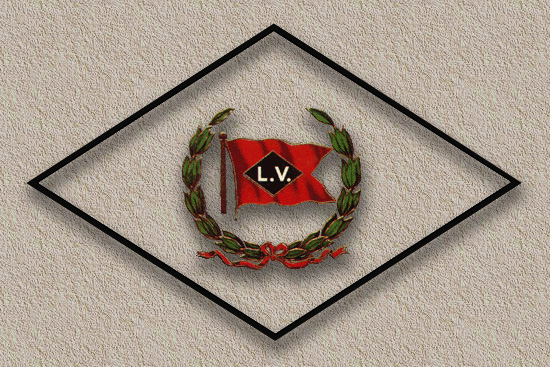
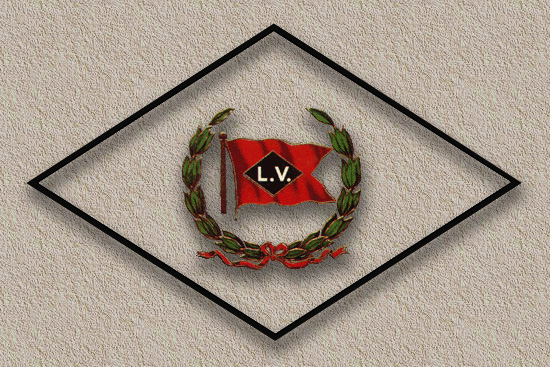

| This is a
"sub
page" of the
"shortlines of Owego, NY" page. This page contains my photos of Alco S2 number 14 in Sayre, before it arrived in Owego in 1984. and the three RS1's passing through Waverly on their way to Owego in 1986. These
photos of
number 14
in Sayre are some of my earliest ever railfan
photos! By 1984 I had "advanced" to my Dad's 35mm Agfa rangefinder and was shooting 35mm film. These
photos
below are of
former Ontario Central Alco S2 number 14 sitting in
Sayre, PA
In 1984
the
former LV engine
terminal was still exactly as the LV left it eight
years before.
Today of
course
Sayre is
very different, :( Two years
later,
in 1986,
I caught a Conrail train out along Broad Street
Extension in Waverly, These are the three Alco RS1's heading to Owego for the Tioga Scenic. (notice they are actually lettered TTM, for Tioga Transportation Museum.) these are
former
Washington
Terminal 47, 59 and 62. I believe these three units were intended to be the new freight locomotives for the Tioga Central freight service, which began in 1987. Today 47
and 62
are still
with the Tioga Scenic in Wellsboro, number 59 left
Owego around 1988,
The units
were
sitting in
front of the old "Tioga Mill" on Broad Street
Extension.
And that concludes the "Railroads of Owego" page, thanks for stopping by! Timeline
and
roster data
initially researched and compiled by Scot Lawrence,
sources: Railpace
Newsmagazine The Diesel Shop - Buffalo Creek Roster The Diesel Shop - Washington Terminal Roster Bridge Line Historical Society - D&H RS3m data Motive Power Rosters - O&H data LocoPhotos - 151 is scrapped :( Railroad.net - 1850 information. Mountainrailway.com - 1850 heritage. Niagararails.com - MLW RS18u information. click here and here for Owego-specific discussions. The forums at american-rails.com Thanks
everyone!
:) The
purpose of
this page
is mainly to document the locomotive rosters of
these shortlines, Official
page of
the Tioga
Central, Wellsboro, PA - http://www.tiogacentral.com/ Official
page of the Owego & Harford - http://www.ohry.net/ Official
page of the Lehigh Railway - http://www.lrwy.net/ official
page of the Luzerne & susquehanna - http://www.lsry.net/ Comments,
corrections, additions, questions, etc. are very
welcome! i'm
sure some of the data above is incorrect, and
clearly much data is
still
missing. thanks!
Scot Lawrence
Page started 2008
|